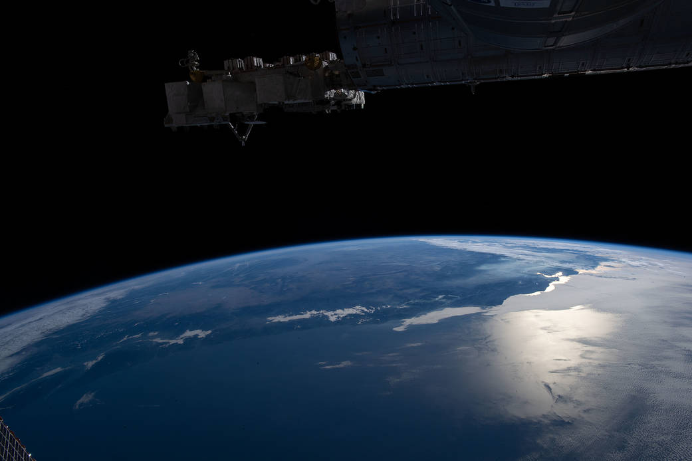
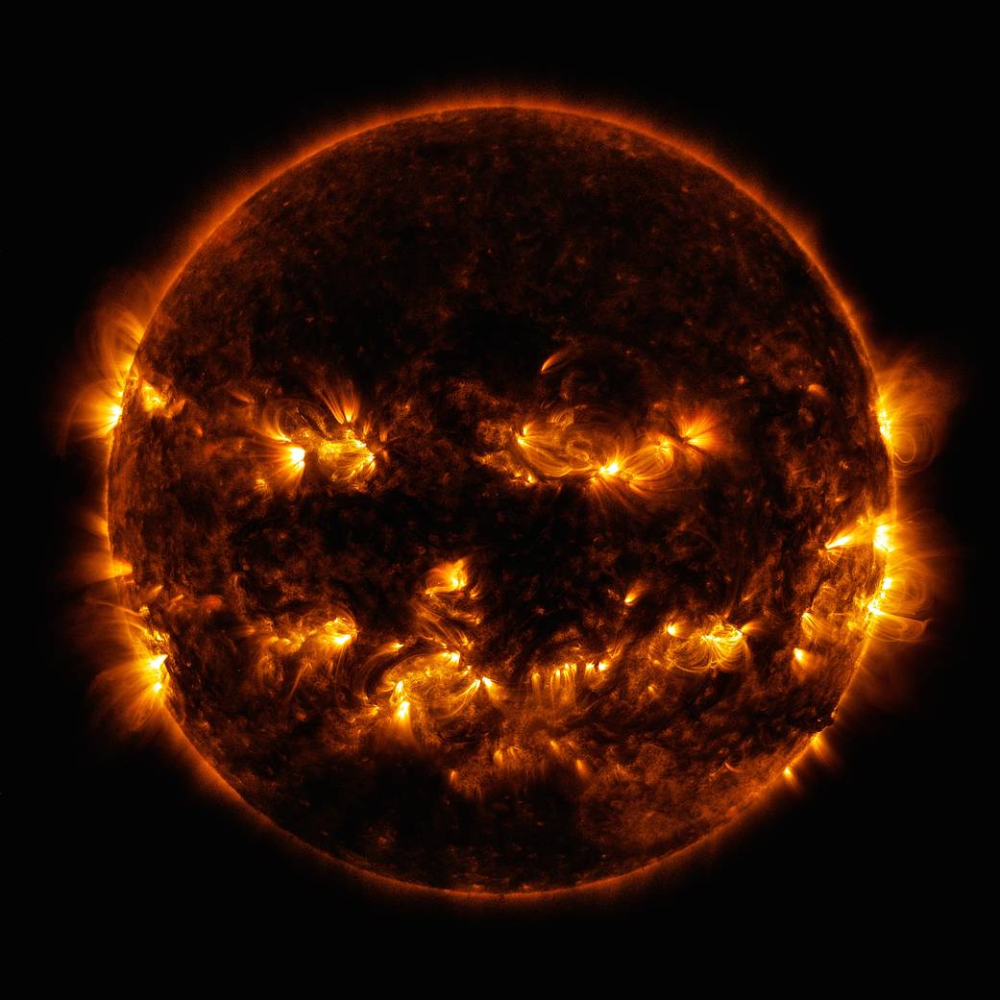

San Francisco depuis l'espace
L'équipage à bord de la Station spatiale internationale a pris cette image du membre de la Terre, ou de l'horizon, avec l'éclat du Soleil rayonnant au large de la côte ouest des États-Unis.

Halloween
Région active du soleil qui ressemble étrangement à une tête de citrouille.

Les étoiles à neutrons créent de l'or et du platine dans leur sillage
Cette illustration montre le nuage de débris chaud, dense et en expansion dépouillé des étoiles à neutrons juste avant leur collision.
Signal audio de la sonde "Sputnik 1"
Le signal que vous pouvez entendre a été le tout premier signal émis par un satellite artificiel.